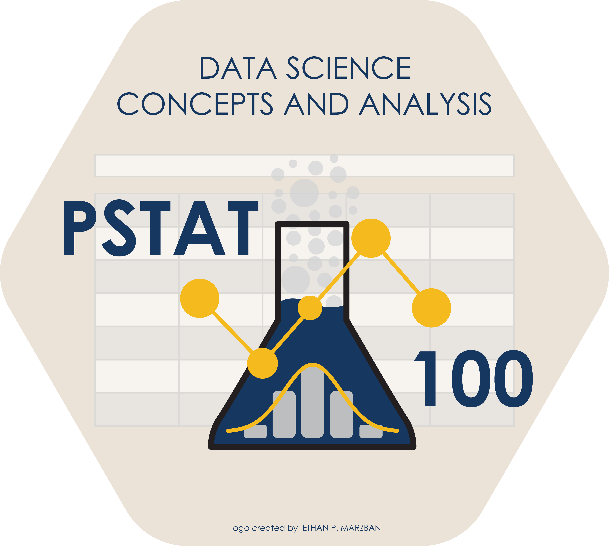

An Very Brief Introduction to Causal Inference
Department of Statistics and Applied Probability; UCSB
Summer Session A, 2025
\[ \newcommand\R{\mathbb{R}} \newcommand{\N}{\mathbb{N}} \newcommand{\E}{\mathbb{E}} \newcommand{\Prob}{\mathbb{P}} \newcommand{\F}{\mathcal{F}} \newcommand{\1}{1\!\!1} \newcommand{\comp}[1]{#1^{\complement}} \newcommand{\Var}{\mathrm{Var}} \newcommand{\SD}{\mathrm{SD}} \newcommand{\vect}[1]{\vec{\boldsymbol{#1}}} \newcommand{\tvect}[1]{\vec{\boldsymbol{#1}}^{\mathsf{T}}} \newcommand{\hvect}[1]{\widehat{\boldsymbol{#1}}} \newcommand{\mat}[1]{\mathbf{#1}} \newcommand{\tmat}[1]{\mathbf{#1}^{\mathsf{T}}} \newcommand{\Cov}{\mathrm{Cov}} \DeclareMathOperator*{\argmin}{\mathrm{arg} \ \min} \newcommand{\iid}{\stackrel{\mathrm{i.i.d.}}{\sim}} \]
In the 1970’s, UC Berkeley conducted an observational study to determine whether or not there was gender bias in the graduate student admittance practices at the university.
male and female. I would like to also acknowledge that we now recognize that there are a great deal many more genders than simply “male” and “female”.Overall, the survey included 8,422 men and 4,321 women.
Of the men 44% were admitted; of the women only 35% were admitted.
So, on the surface, it does appear as though women are being disproportionately denied entry.
| Men | Women | |||
| Major | Num. Applicants | % Admitted | Num. Applicants | % Admitted |
| A | 825 | 62 | 108 | 82 |
| B | 560 | 63 | 25 | 68 |
| C | 325 | 37 | 593 | 34 |
| D | 417 | 33 | 375 | 35 |
| E | 191 | 28 | 393 | 24 |
| F | 373 | 6 | 341 | 7 |
Nearly none of the majors on their own display this bias against women.
So, what’s going on? How can it be that none of the majors individually display a discrimination against women, but overall they display discrimination against women?
The answer lies in how difficult each major was to get into.
For instance, Major A appears to have an overall 64% acceptance rate, whereas Major E appears to have an overall 53.62% acceptance rate.
Indeed, if we look at the Num. Applicants column within each gender, we see that, on the aggregate, men were applying to easier majors!
In other words, difficulty of major was a confounding variable that influenced the acceptance rates.
After controlling for this variable, it was actually found that there was no significant difference in admittance rates between men and women.
As an aside, this relates to what is known as Simpson’s Paradox, a well-documented statistical phenomenon in which relationships between percentages in subgroups can sometimes be reversed after the subgroups are aggregated.
But, for now, I use this example as a way to re-introduce us to the notion of confounding variables.
Intuitively, we can think of a confounding variable as a variable that affects a relationship of interest, but that is not explicitly modeled or controlled for.
This is a pretty vague definition; we’ll revisit the notion of confounding in a few slides, once we’ve gotten a bit of basics under our belt.
We consider an outcome (or response) variable, which we denote by Y.
We also consider a treatment, whose effect on the response is what we are interested in exploring.
As an example, suppose we let Y denote the pain rating (on a scale from 1 to 10) of a headache.
If we’re interested in the effect taking Aspirin has on this pain rating, our treatment is taking Aspirin or not.
If we’re interested in the effect a pilot program has on AP Calculus AB scores, our treatment is being a part of the program or not.
Now, note one important distinction: we are not, for example, asking “whether or not taking Aspirin causes a decrease in pain levels.”
So, what do we mean by “effect”?
Here’s the general idea. Let Yi(1) denote the response value of the ith individual, assuming they have undergone treatment.
For example, in the context of our headache example, Yi(1) might denote John’s pain level on Aspirin and Yi(0) would denote John’s pain level off of Aspirin.
| w/ Treatment | w/o Treatment |
|---|---|
| Y1(1) | Y1(0) |
| Y2(1) | Y2(0) |
| ⋮ | ⋮ |
| Yn(1) | Yn(0) |
To stress, in the headache example: Yi(1) and Yi(0) represent John’s pain levels on and off Aspirin at the same time, assuming no changes in John’s status other than his Aspirin usage.
To that end, we call Yi(1) and Yi(0) potential outcomes.
The ITE are unknown and unknowable, since (again) we never observe both potential outcomes.
So, what do we observe?
| Y1(1) | Y0(1) | Zi |
|---|---|---|
| \(\bullet\) | NA |
1 |
| ⋮ | 0 | |
| \(\bullet\) | NA |
1 |
NA |
\(\bullet\) | 0 |
| ⋮ | ||
NA |
\(\bullet\) | 0 |
We can think of the ITEs (ùúèi) as population parameters. However, they are unestimable.
Instead, we can focus on the average causal effect (ACE): \[ \tau := \frac{1}{n} \sum_{i=1}^{n} \tau_i =: \frac{1}{n} \sum_{i=1}^{n} \left[Y_{i}^{(1)} - Y_{i}^{(0)} \right] \]
Our goal will be to estimate this; that is, we wish to determine an estimate for the average causal effect of treatment on the response.
Let’s establish some assumptions and define some notation.
We make the following assumptions:
These two assumptions are collectively referred to as the Stable Unit Treatment Value Assumption (SUTVA).
Another assumption we will make is that we are in the context of a completely randomized experiment (CRE).
We’ve talked briefly about experiments (as opposed to observational studies) before.
Essentially, we can think of an experiment as a study in which we (the designers) control who gets and doesn’t get treatment.
A CRE is one in which the Zi’s are, in a sense, completely random.
Here’s a more formal definition:
Definition: Completely Randomized Experiment
Let Zi denote the allocation indicator for the ith unit Let n1 denote the number of units on treatment and let n0 denote the number of units off treatment; define n := n1 + n2. A completely randomized experiment is one for which \[ \mathbb{P}(\vect{Z} = \vect{z}) = \frac{1}{\binom{n}{n_1}}\] where \(\vect{z} = (z_1, \cdots, z_n)\) satisfies \(\sum_{i=1}^{n} z_i = n_1\) and \(\sum_{i=1}^{n} (1 - z_i) = n_0\).
Okay, so that takes care of assumptions: we’ll assume SUTVA, and that we’re in the context of a CRE.
Let’s now establish some notation.
From the population, we define:
\[ \begin{align*} \textbf{Population Means:} & \qquad \overline{Y^{(1)}} := \frac{1}{n} \sum_{i=1}^{n} Y_i^{(1)}; \qquad \overline{Y^{(0)}} := \frac{1}{n} \sum_{i=1}^{n} Y_i^{(0)} \\ \textbf{Population Var's:} & \qquad S^2_{(j)} := \frac{1}{n - 1} \sum_{i=1}^{n} \left[ Y_i^{(j)} - \overline{Y_i^{(j)}} \right]^2, \ j = 0, 1 \\ \textbf{Population Cov's:} & \qquad S_{(1)(0)} := \frac{1}{n - 1} \sum_{i=1}^{n} \left[ Y_i^{(1)} - \overline{Y_i^{(1)}} \right] \left[ Y_i^{(0)} - \overline{Y_i^{(0)}} \right] \end{align*} \]
Lemma 4.1
\[ 2 S_{(1)(0)} = S^2_{(1)} + S^2_{(2)} - 2 S^2_{(\tau)}\]
Now, remember what we actually observe: for any unit i, we only either observe Yi(1) or Yi(0), never both.
So, it seems natural to introduce some sample quantities (in contrast to the population quantities we defined above).
For example, suppose we want to compute the average observed response value among those on the treatment.
\[ \widehat{\overline{Y^{(1)}}} := \frac{1}{n_1} \sum_{i=1}^{n} Z_i Y_i ; \qquad \widehat{\overline{Y^{(0)}}} := \frac{1}{n_0} \sum_{i=1}^{n} (1 - Z_i) Y_i \]
Allow me to expound upon this a bit further.
Recall that Yi denotes the observed response of the ith unit.
Now, our first sum does technically range over all indices i from 0 to n.
Though this may seem convoluted at first, it is actually a very neat way to succinctly express our sample averages!
\[\begin{align*} \widehat{S}^2_{(1)} & := \frac{1}{n_1 - 1} \sum_{i=1}^{n} Z_i \left[ Y_i - \widehat{\overline{Y^{(1)}}} \right]^2 \\ \widehat{S}^2_{(0)} & := \frac{1}{n_0 - 1} \sum_{i=1}^{n} (1 - Z_i) \left[ Y_i - \widehat{\overline{Y^{(0)}}} \right]^2 \end{align*}\]
Check Your Understanding
How might we define the sample covariance (if possible)?
Whew, that’s a lot of setup! Before we proceed, let’s quickly take stock of what we’ve done.
For each unit i, we have associated potential outcomes Yi(1) and Yi(0) indicating response values on- and off-treatment, respectively.
This fundamental problem poses challenges for estimating the individual treatment effects (ITE) ùúèi := Yi(1) - Yi(0) or the average causal effect (ATE) ùúè.
(Most) Every estimation problem requires assumptions: our assumptions are SUTVA, and that we are in the context of a CRE.
We define the population means, population standard deviations, and population covariance as on a few slides ago.
We are now in a position to posit an estimator for the ATE!
Theorem
Under a CRE (and assuming SUTVA), an unbiased estimator for the ACE is given by \[ \widehat{\tau} := \widehat{\overline{Y^{(1)}}} - \widehat{\overline{Y^{(0)}}} \]
The variance of this estimator is given by
\[\begin{align*} \mathrm{Var}(\widehat{\tau}) & = \frac{S_{(1)}^2}{n_1} + \frac{S_{(0)}^2}{n_0} - \frac{S_{(\tau)}^2}{n} \\ & = \frac{n_0}{n_1 n} S_{(1)}^2 + \frac{n_1}{n_0 n} S_{(0)}^2 + \frac{2}{n} S_{(1)(0)} \end{align*}\]
Theorem
Define the following estimator for the variance of \(\widehat{\tau}\): \[ \widehat{V} := \frac{\widehat{S}_{(1)}^2}{n_1} + \frac{\widehat{S}_{(0)}^2}{n_0} \] This estimate is conservative for estimating \(\mathrm{Var}(\widehat{\tau})\) is the sense that \[ \mathbb{E}[\widehat{V}] - \mathrm{Var}(\widehat{\tau}) = \frac{S^2_{(\tau)}}{n} \geq 0 \]
Theorem
\[ \frac{\widehat{\tau} - \tau}{\sqrt{\Var(\widehat{\tau})}} \rightsquigarrow \mathcal{N}(0, 1) \]
Let’s also quickly discuss how confounding enters our model.
Up until now, we’ve essentially been assuming the absence of confounders.
Because the confounder affects the treatment, it will affect our assignment indicator Zi.
Perhaps it’s useful to (again) think back to our Aspirin/headache example. One possible confounder might be level of exercise - heavy exercise will definitely affect pain levels, but it will also affect how likely someone is to take Aspirin.
level of exercise is likely a confounding variable.So, here’s an idea: given a confounding variable X, why don’t we run a logistic regression of Zi onto X?
Naturally, when there are many confounders, matching based on the raw confounder values can be very challenging and results in significant data loss.
A clever idea is to match based not on the raw values of the confounding variables, but rather the propensity scores.
I encourage you to read more in [A First Course in Causal Inference] by Peng Ding, if you are interested.
To close out, I’ll briefly outline a relatively famous case study.
The National Supported Work Demonstration (NSW) was a employment program that ran between March 1975 and June 1977.
Essentially, the program offered employment training to participants in the hopes of decreasing disparities.
Initial findings seemed to indicate that those who underwent the training had lower average incomes than those who did not - as such, on the surface, it seemed like the training actually hurt people’s chances of high-level employment later in life.
In 1986, Robert J. LaLonde conducted a causal analysis of the findings of the study.
Please fill out Course Evaluations!
I’ll release the Bonus Lab (Lab 11) sometime today or tomorrow.
Tomorrow will be our final lecture (I’ll also bring some hex stickers with the PSTAT 100 course logo for everyone tomorrow!)
During Section tomorrow, you can either work on the bonus lab or work on the project.

PSTAT 100 - Data Science: Concepts and Analysis, Summer 2025 with Ethan P. Marzban